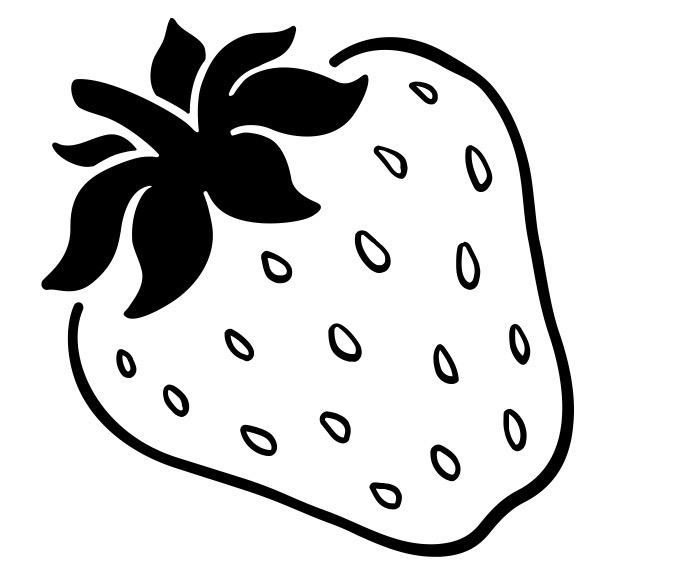

لم تكن توجد الوجبة الأكثر سعادة ولذة وتفضيلًا في كل الأوقات ولكل الأعمار.. حتى إخترعوا البانكيك! إخترتها موضوعًا لموقعي للأسباب التالية:
في هذة الصفحة سأستعرض طرق التحضير الصحية في مختلف أنواع الحميات الغذائية و المعتمدة لدى خبراء التغذية، أما في الصفحة الثانية ستجدون طرق تحضير مختلفة في دول مختلفة
| vegan pancakes | keto pancakes | a pie pancakes |
|---|---|---|
| vegan recipes are very simple.mostly using oat& almound flour as a replacement, Banan and buttermilk and youre done! you still have a wide range of toppings : fruits- dates- nuts | using almound&oat flour, in addition to a special ingredient :cream cheese. these taste so good with honey and butter  | lemon& blueberry, apple& cinnamon, Oat& CARROT, all are great pies combos which becomes greater as pancake recipe. we mostly stick to the basic ingredients adding the flavours only |

اضغط على الصورة للإنتقال للصفحة الثانية